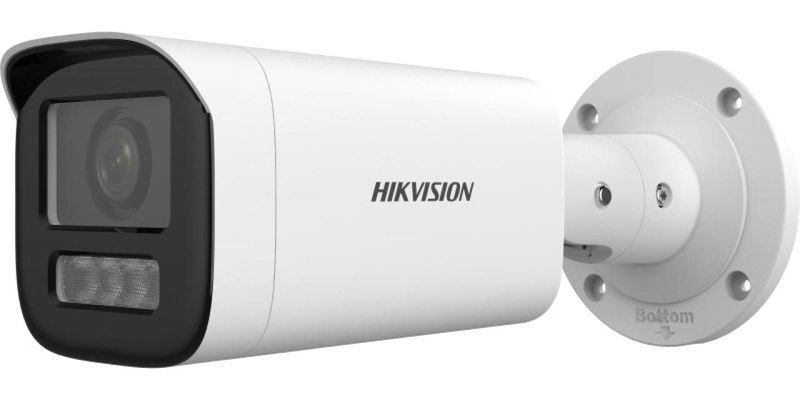

كل المنتجات ← كاميرات وأجهزة هيكفيجن
الموديل: DS-2CD1643G2-LIZU(2.8-12mm)

| الماركة | هيكفيجن |
|---|---|
| الموديل | DS-2CD1643G2-LIZU(2.8-12mm) |
| نوع المنتج | كاميرا بوليت خارجية IP |
| الكاميرا | |
| حساس الصورة | حساس CMOS بمسح تقدمي مقاس 1/3 بوصة |
| أقصى دقة | 2560 × 1440 |
| أدنى إضاءة | ملون: 0.005 لوكس @ (F1.6، AGC مفعّل)؛ أبيض وأسود: 0 لوكس مع الأشعة تحت الحمراء |
| سرعة الغالق | من 1/3 إلى 1/100,000 ثانية |
| ليلي/نهاري | فلتر قص الأشعة تحت الحمراء |
| ضبط الزاوية | أفقي: من 0° إلى 360°، رأسي: من 0° إلى 90°، دوران: من 0° إلى 360° |
| العدسة | |
| نوع العدسة | عدسة متغيرة البعد البؤري بمحرك، 2.8 إلى 12 مم |
| البعد البؤري وزاوية الرؤية | 2.8 to 12 مم, horizontal FOV من 96.7° إلى 29.7°, vertical FOV من 51.7° إلى 16.7°, diagonal FOV من 114.3° إلى 34° |
| تركيب العدسة | Ø14 |
| نوع القزحية | ثابت |
| فتحة العدسة | F1.6 |
| كثافة البكسل | |
| مسافات DORI | D: 64.0 to 198.0 m, O: 25.4 to 78.6 m, R: 12.8 to 39.6 m, I: 6.4 to 19.8 m |
| الإضاءة | |
| نوع الإضاءة المساعدة | أشعة تحت الحمراء، إضاءة بيضاء |
| مدى الإضاءة المساعدة | حتى 50 متر |
| الإضاءة المساعدة الذكية | نعم |
| طول موجة الأشعة تحت الحمراء | 850 nm |
| الفيديو | |
| البث الرئيسي | 50 Hz: 20 fps (2560 × 1440) 25 fps (1920 × 1080, 1280 × 720) 60 Hz: 20 fps (2560 × 1440) 24 fps (1920 × 1080, 1280 × 720) |
| البث الفرعي | 50 Hz: 25 fps (1280 × 720, 640 × 480, 640 × 360) 60 Hz: 24 fps (1280 × 720, 640 × 480, 640 × 360) |
| ضغط الفيديو | البث الرئيسي: H.265+/H.265/H.264+/H.264، البث الفرعي: H.265/H.264/MJPEG |
| معدل بت الفيديو | 32 Kbps to 16 Mbps |
| نوع H.264 | Baseline Profile وMain Profile وHigh Profile |
| نوع H.265 | Main Profile |
| التحكم في معدل البت | CBR,VBR |
| ترميز الفيديو القابل للتوسع (SVC) | ترميز H.264 وH.265 |
| منطقة الاهتمام (ROI) | منطقة ثابتة واحدة للبث الرئيسي |
| الصوت | |
| نوع الصوت | صوت أحادي (مونو) |
| ضغط الصوت | G.711ulaw/G.711alaw/G.722.1/G.726/MP2L2/PCM/AAC-LC |
| معدل بت الصوت | 64 كيلوبت/ث (G.711ulaw/G.711alaw) / 16 كيلوبت/ث (G.722.1) / 16 كيلوبت/ث (G.726) / 32 إلى 160 كيلوبت/ث (MP2L2) / 16 إلى 64 كيلوبت/ث (AAC-LC) |
| معدل عينات الصوت | 8 kHz/16 kHz |
| تصفية ضوضاء البيئة | نعم |
| الشبكة | |
| البروتوكولات | TCP/IP, ICMP, DHCP, DNS, HTTP, RTP, RTSP, RTCP, NTP, IGMP, IPv6, UDP, QoS, FTP, SMTP |
| المشاهدة المباشرة المتزامنة | حتى 6 قنوات |
| واجهة البرمجة API | Open Network Video Interface (Profile S, Profile G, Profile T),ISAPI,SDK |
| الأمان | حماية بكلمة مرور، كلمة مرور معقدة، علامة مائية، مصادقة أساسية وDigest لـ HTTP، مصادقة WSSE وDigest لواجهة ONVIF، سجل تدقيق أمني، مصادقة المضيف (عنوان MAC) |
| المستخدمون | حتى 32 مستخدم، 3 مستويات: مدير، مشغل، مستخدم |
| برنامج العميل | iVMS-4200، Hik-Connect |
| متصفح الويب | المشاهدة المباشرة بإضافة: IE 10 وIE 11؛ الخدمة المحلية: Chrome 57.0+، Firefox 52.0+، Edge 89+ |
| الصورة | |
| إعدادات الصورة | وضع التدوير، التشبع، السطوع، التباين، الحدة، الكسب، توازن الأبيض؛ قابلة للضبط من برنامج العميل أو المتصفح |
| التبديل ليلي/نهاري | نهاري، ليلي، تلقائي، مجدول |
| النطاق الديناميكي الواسع (WDR) | 120 dB |
| نسبة الإشارة إلى الضوضاء SNR | ≥ 52 dB |
| تحسين الصورة | BLC وHLC و3D DNR |
| قناع الخصوصية | 4 أقنعة خصوصية مضلعة قابلة للبرمجة |
| الواجهات | |
| منفذ الإيثرنت | منفذ إيثرنت RJ45 واحد 10/100 ميجابت تكيفي |
| التخزين المدمج | فتحة بطاقة ذاكرة مدمجة، تدعم بطاقة microSD/microSDHC/microSDXC حتى 512 جيجابايت |
| ميكروفون مدمج | Yes,1 built-in microphone |
| الصوت | -S: 1 input (line in), two-core terminal block, max. input amplitude: 3.3 Vpp, input impedance: 4.7 KΩ, interface type: non-equilibrium -S: 1 output (line out), two-core terminal block, max. output amplitude: 3.3 Vpp, output impedance: 100 Ω, interface type: non-equilibrium |
| الإنذار | -S: 1 input, 1 output (max. 12 VDC, 30 mA) |
| زر إعادة الضبط | نعم |
| الأحداث | |
| الأحداث الأساسية | كشف الحركة (يدعم الإنذار حسب نوع الهدف: شخص أو مركبة)، إنذار العبث بالفيديو، الاستثناءات |
| الربط التلقائي | Upload to FTP/memory card, notify surveillance center, send email, trigger recording, trigger capture, audible warning, (-S model) trigger alarm output |
| عام | |
| الطاقة | 12 VDC ± 25%, 0.9 A, max. 11 W,Ø5.5 مم coaxial power plug,reverse polarity protection, PoE: IEEE 802.3af, Class 3, max. 12.9 W |
| الخامة | معدن وبلاستيك |
| الأبعاد | Ø105 مم × 252 مم (Ø4.13" × 9.92") |
| أبعاد العبوة | 315 مم × 137 مم × 141 مم (12.40" × 5.39" × 5.55") |
| الوزن مع العبوة | Approx. 910 g (2.0 lb.) |
| ظروف التخزين | من -30 °C إلى 60 °C (من -22 °F إلى 140 °F). رطوبة 95% أو أقل (بدون تكثيف) |
| ظروف بدء التشغيل والعمل | من -30 °C إلى 60 °C (من -22 °F إلى 140 °F). رطوبة 95% أو أقل (بدون تكثيف) |
| اللغة | الإنجليزية، الأوكرانية |
| وظائف عامة | Heartbeat,mirror,password reset via email,password protection,anti-banding |
| الاعتمادات | |
| التوافق الكهرومغناطيسي EMC | CE-EMC: EN 55032:2015+A1:2020, EN 50130-4:2011+A1:2014, EN IEC 61000-3-2:2019+A1:2021, EN 61000-3-3:2013+A1:2019+A2:2021, RCM: AS/NZS CISPR 32: 2015, IC: ICES-003: Issue 7 |
| السلامة | UL: UL 62368-1, CB: IEC 62368-1: 2014+A11, CE-LVD: EN 62368-1: 2014/A11: 2017, BIS: IS 13252 (Part 1): 2010/IEC 60950-1: 2005 |
| البيئة | CE-RoHS: 2011/65/EU, WEEE: 2012/19/EU, Reach: Regulation (EC) No 1907/2006 |
| الحماية | IP67: المعيار IEC 60529-2013 |